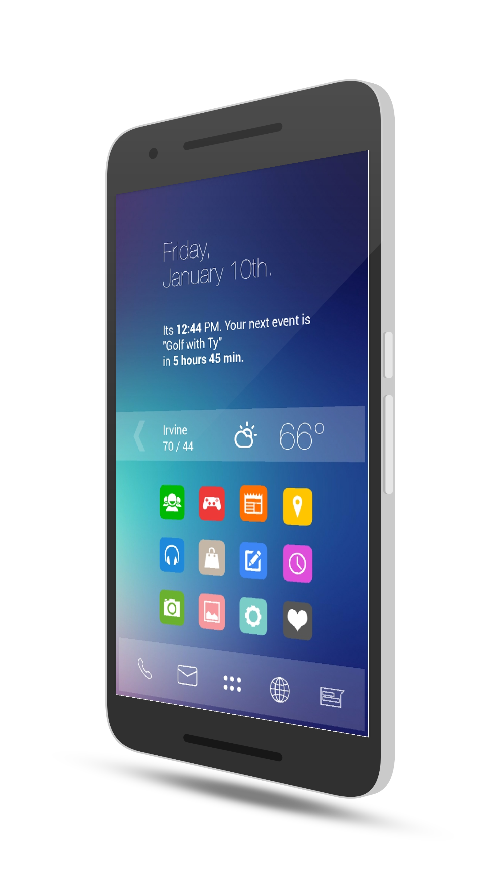
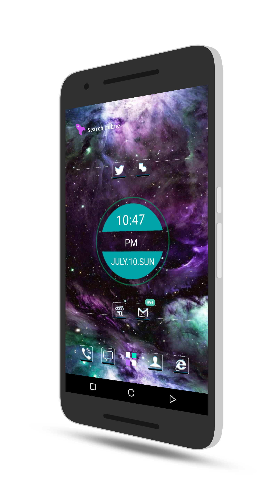

An Introduction To Custom Themes
Many users of Android devices are fond of customizing their devices. If you've already visited the First Time part of this site, you might have a handle on what custom Lauchers are for Android already.

↑ This is Themer ↑
Themer Is An All-In-One App For Easy Customization
This page is in no way sponsored by or paid by the group that makes Themer, it is just known to be a great solution for one-click applying a theme to your Android smartphone. Also, note that the above picture is clickable and will send you to the Google Play Store link for it.
↑ This Is An Example Of Themer Running A Custom Theme
Many custom themes exist for both Themer and to put together on your own. Themer can be customized for a device just by installing it and opening it the first time.
Another launcher that can be used to customize your homescreen as easily as the all-in-one app Themer, but that has a bit more developer support, is called Buzz Launcher Buzz Launcher- besides having longer-term and faster developer support alongside feedback responses- was known in the customization enthusiast space long before Themer entered the game.
Many of the developers for Buzz Launcher originated from more population-dense countries such as South Korea and China originally, which had North-American early-adopter users of the app a bit leery until more english support was added. Nowadays, however, Buzz Launcher is gaining a massive amount of traction amongst USA Android fans and users.
↓ Example Of A Complete Buzz Launcher Theme Installed ↓

Many Buzz Themes and Themer Themes Come Complete With Required Widget Apps
This page is in no way sponsored by or paid by the group that makes Buzz Launcher, it is just known to be a great solution for one-click applying a set of themes to your Android smartphone. Also, note that the above picture is clickable and will send you to the Google Play Store link for it.
When installing whichever Buzz or Themer theme that tickles your fancy, you'll come to notice that there will be little ↓ icons on top of widgets.
Those arrow icons mean that you can download the widget and set it up just by tapping the arrow, as it won't be installed until you do so. After that, it's a fairly straightforward setup process